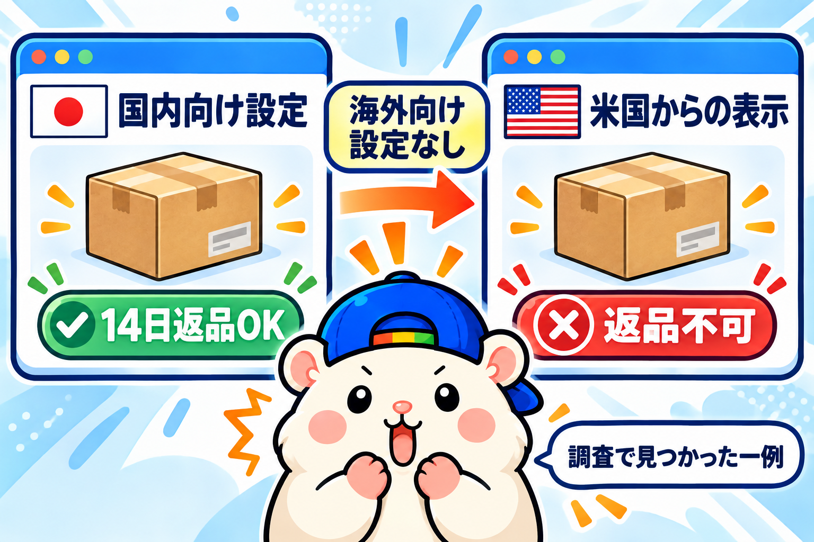
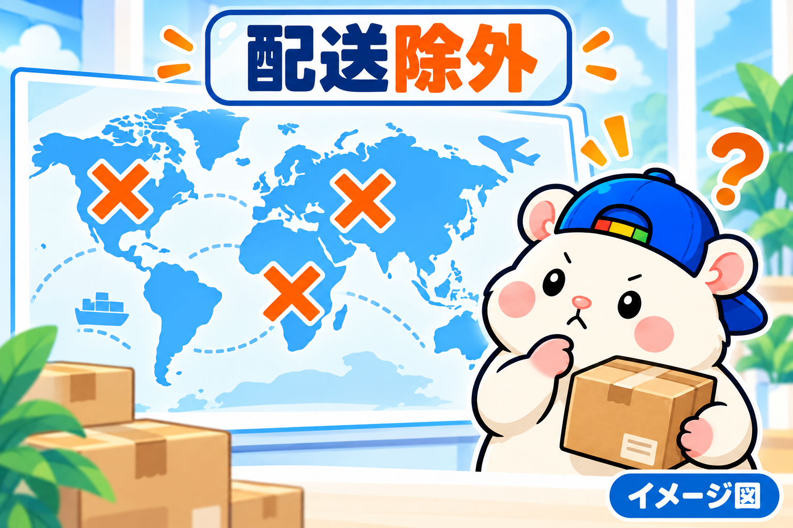

eBayジャパンが表彰した日本のセラー20店の、返品と配送の設定を、ぜんぶ調べました。
きっかけは、ぼくの店の返品設定です。
ぼくの店は、返品60日・返送料はこちら持ち。
かなり手厚くしています。
でも8月は、返金で9万7千円を失いました。
「手厚すぎるのかな」
「上の店は、どうしているんだろう」
そう思って、調べてみました。
調べ方: アメリカのお客さんの画面で見る
材料は、eBayジャパンの受賞ページです。
▼2025 eBay Japan Awards
https://www.ebay.co.jp/ebayjapan-award/
受賞セラーのうち、eBayストアが載っている20店を対象にしました。
見たのは、アメリカのお客さんに見えている設定です。
日本からふつうに開くと、店によっては商品が1つも出てきません。
返品は1店5件ずつ、配送は1店1件ずつ、出品の設定を確認しました。
この「アメリカから見る」が大事なポイントなので、あとでもう一度書きます。
返品: いちばん多いのは「30日・返送料無料」
結果はこうでした。
| 返品の設定 | 店の数 |
|---|---|
| 30日・返送料はセラー持ち | 9 |
| 返品不可 | 5 |
| 60日・返送料はセラー持ち | 3 |
| 14日・返送料はセラー持ち | 1 |
| 14日・返送料はお客さん持ち | 1 |
| 30日・返送料はお客さん持ち | 1 |
返品を受ける15店のうち、13店が返送料をセラー持ちにしていました。
お客さんから見ると「返品送料無料」です。
返品を受けるなら、送料もこちらで持つ。
これが、上の店の基本の形でした。
ジャンルでも分かれます。
カメラ、ゲーム機、ゴルフ、楽器、ブランド品は、30日が中心。
高級時計の専門店は、2店とも14日でした。
60日にしていたのは3店。
そのうちの1店が、最優秀賞のセラーです。
ぼくの店の60日は、手厚すぎたのではなく、いちばん上の店と同じでした。
返品不可の5店は、なぜ返品を受けないのか
4店に1店は、返品不可でした。
ジャンルは、トレカ、スニーカー、フィギュア、アニメグッズ、中古ブランドバッグ。
理由はどこにも書いていないので、ここからはぼくの仮説です。
仮説1: 返ってきた品を、たしかめにくいジャンル
トレカやフィギュアは、小さなキズや箱のへこみひとつで値段が変わります。
トレカやブランドバッグは、別の品にすり替えて返される心配もあります。
返品を受けると、「本当に同じ品か」「同じ状態か」をたしかめるのがむずかしい。
仮説2: たくさん売る店ほど、返品の手間が重い
これまでの販売数が表示されていた15店のうち、70万点を超えていたのは3店。
その3店は、3店とも返品不可でした。
海外から1件ずつ返送を受けて、たしかめて、出し直す。
この手間は、売る数に比例して増えます。
仮説3: 返品不可でも、お客さんは守られている
eBayには返金保証があります。
「説明と違う」「届かない」ときは、返品不可の店でも返金の対象です。
つまり返品不可で断れるのは、「気が変わった」という返品だけ。
だから大量に売る店ほど、ここで線を引きやすいのだと思います。
おもしろかったのは、同じ中古ブランドバッグの店どうしで、正反対だったことです。
最優秀賞のセラーは、60日・返送料セラー持ち。
新人賞のセラーは、返品不可。
ジャンルだけでは決まらない。
店の大きさや、1点の損がどれだけ重いかで、答えが変わるのだと思います。
いちばんの発見: 設定がないと「返品不可」に見える

調べていて、いちばん驚いたのがここです。
eBayの返品設定は、国内向けと海外向けが別です。
海外向けの設定を入れていない出品は、国内向けを「14日返品OK」にしていても、アメリカのお客さんには「出品者はこの商品の返品を受け付けません」と表示されていました。
受賞セラーの出品にも、この状態のものがありました。
同じ店でも、海外向けの設定が入っている出品は「30日以内返品可」と出ていたので、出品ごとの設定のちがいです。
自分の出品が、アメリカのお客さんからどう見えているか。
一度、お届け先をアメリカにして、自分の商品ページを開いてみてください。
ぼくの店は、海外向けにも60日が入っていました。
ほっとしました🐹
配送除外国: ほとんどの店が外している先がある

配送しない国の設定(除外リスト)も、1店1件ずつ見ました。
| 除外している先 | 受賞20店のうち |
|---|---|
| 米軍基地あて・私書箱 | 17店 |
| ロシア | 15店 |
| 日本 | 15店 |
| 南米 | 14店 |
| アフリカ | 13店 |
| 中東 | 11店 |
| 中国・インド | 9店 |
| アラスカ・ハワイ | 3店 |
日本を外しているのは、国内のお客さんには売らない、という設定です。
除外の数は、店によって2件から201件まで大きくちがいました。
真ん中は63件。
ぼくの店は68件で、ほぼ真ん中です。
送り先をしぼる店もありました。
アメリカだけに送る店、アメリカとカナダだけに送る店。
全世界に出して一部を外すか、送る国を決めるか。
ここも店によって分かれます。
ひとつだけ、ぼくの店が少数派だったところがあります。
アラスカ・ハワイです。
ぼくの店は外していますが、受賞20店で外しているのは3店だけでした。
ここは、外している理由をもう一度たしかめます。
まとめ: 上の店の「ふつう」は、30日・返送料無料
- 返品は「30日・返送料セラー持ち」がいちばん多い(20店中9店)
- 60日にしているのは、最優秀賞をふくむ3店
- 返品不可は4店に1店。たしかめにくいジャンルと、大量に売る店に多い
- 海外向けの返品設定がない出品は、アメリカでは「返品不可」と表示される
- 配送除外は、米軍基地あて・私書箱・ロシアを、ほとんどの店が外している
返品をどうするかは、ジャンルと売り方で答えが変わります。
でも「アメリカのお客さんに、どう見えているか」は、どの店もたしかめておいたほうがいいと思います。
あなたの店の返品設定、アメリカのお客さんの画面で見たことはありますか?
▼中の人🏠(レンタルスペース23部屋・売上1.5億)のレンスペ実録
https://note.com/rentalspace_kiku
▼ブログ(eBay×レンスペ、全記事まとめ)
https://rental-space.net
▼この店のやり方は、ぜんぶ1冊にまとめてあります
リサーチ・出品・値付け・顧客対応まで、初月利益18万6,673円を出した実店舗の記録と手順を全部書いた教科書です。
読んだその日から、AI社員の作り方をそのまま真似できます。
『AI × eBay輸出の教科書 — 梱包以外、ぜんぶAI』(公式サイト最安 ¥8,800)
https://rental-space.net/kyokasho/ebay/
※先行5部限定の価格です。以降、2,000円ずつ値上げします。